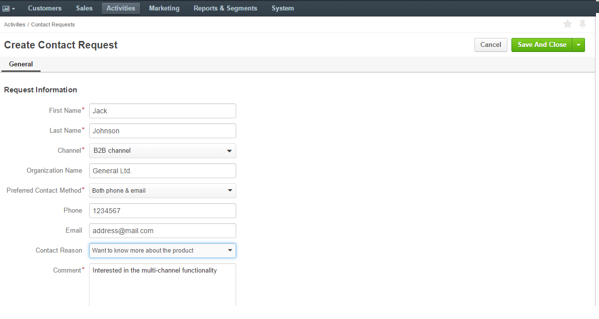

Requests for OroCRM support, including partnership proposals, complaints, additional information and assistance requests that come from a third-party application or have been registered directly in OroCRM are collected with the Create Contact Request actions.
In order to create a contact request from OroCRM:
| Name | Description |
|---|---|
| First Name* | The first name of the person, who has requested support. |
| Last Name* | The last name of the person, who has requested support. |
| Channel* | The channel from which the request was received. The drop-down menu contains all the channels to which the Contact Request entity has been assigned in the alphabetical order. By default, it is filled with the first channel in the list. |
| Organization Name | The name of an organization, on behalf of which the request has been filed, if any. This field is for information and search purposes only. |
| Preferred Contact Method* | Choose the contact method to be used of the list. The possible values are:
By default, the field is set to Email. |
| Phone and Email | Contact details related to the request. The values are determined by the Preferred Contact Method and must be defined. |
| Contact Reason | Choose a contact reason from the drop-down menu to simplify the request analysis. The field is by default set to Other. |
| Comment* | Actual text of the request. This must be filled. |
For example, there was a request from Mr. Jack Johnson, representative of the General Ltd. interested in OroCRM functionality.
Add the code for the form on your site. Use the forms of the Magento Contact Us Request type for the Magento-based businesses and of the Contact Request type for the other websites. Every time a user has filled the form it will be added to the Contact Requests grid in Oro CRM.
Note
Other contact request types can be developed in the course of integration, according to your specific business needs.
Note
The ability to view and edit contact requests depends on the specific roles and permissions defined in the system.